Applications are now closed.
The International Astronomical Youth Camp (IAYC) is a three-week long summer camp aiming to promote knowledge of astronomy and related sciences in a unique international atmosphere. It is run by an international team of students and young scientists and organised by the International Workshop for Astronomy e.V..
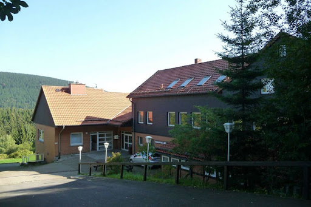
More detailed information about the IAYC in general, participants, the daily schedule and obsvering during the IAYC can be found in the About the IAYC section. We strongly recommend all prospective participants read this section as well as this First Info carefully! The PDF version of the First Info can be found here.
About the IAYC 2023
For the IAYC 2023 we will return to the Eichsfelder Hütte in central Germany! The house is located southeast of Hanover and just outside of the small town St. Andreasberg (~1490 inhabitants). It is also situated directly on the border of the Harz National Park, surrounded by nature and wildlife.
The camphouse itself is a hostel style dormitory with bedrooms of various sizes (2-8 beds). In addition, there is enough space for the various working groups and free-time activities (there are several common rooms available for socialising and other free time activities).
The house also has plenty of space for outdoor activities e.g. a ping-pong table, soccer field, terrace, and nearby meadows. The area is beautiful for hiking and even has a nearby lake (~1,5 hour walk).
Dates: 9th - 29th July (Camp runs from Sunday evening to Saturday morning.)
Camp house: Eichsfelder Hütte
Address: Am Gesehr 38, 37444 St. Andreasberg, Deutschland
Latitude: 51° 43’ 22.0” N
Longitude: 10° 31’ 46.1” E
Altitude: ~705 m
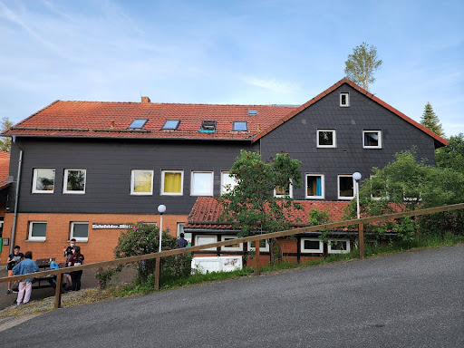
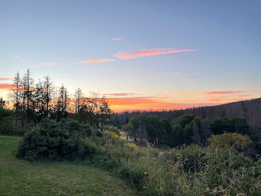
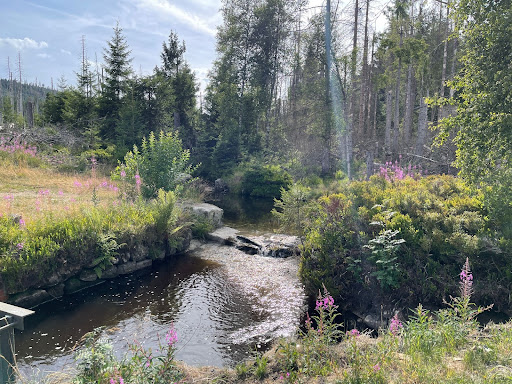
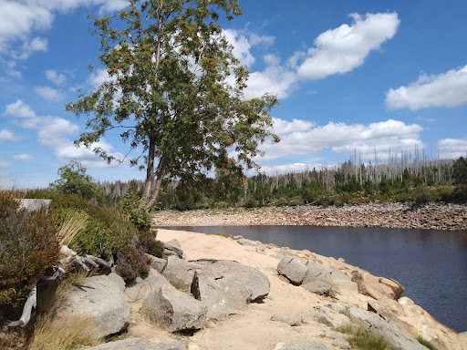
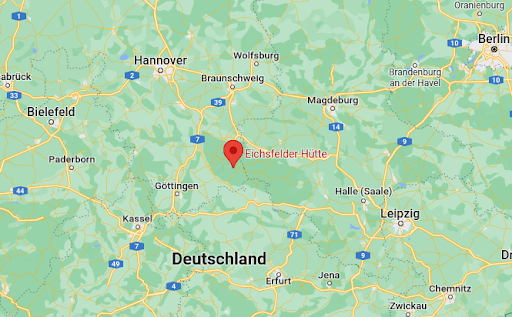
A few facts about Germany
Area: 357022 km²
Population: ~83.2 Million (2020)
Capital: Berlin
Major Cities: Hamburg, Munich, Cologne, Frankfurt/Main
Official Language: German
Currency: Euro (EUR) €
International dialing code: +49 / 0049
Travelling in Europe in general, and in Germany in particular, is very safe. Most Germans — especially the younger generation — are fluent in English, therefore communicating with the locals will not pose much of a problem.
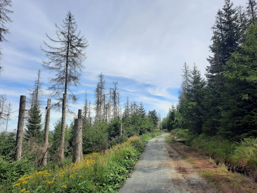
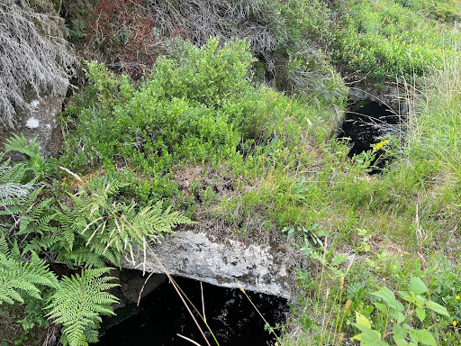
Observing
Eichsfelder Hütte is located in an area of little light pollution, and therefore has very dark skies. Observing takes place during working group as part of your project, or after midnight meal when the telescopes are available for everyone. Catch a glimpse of a celestial object through a telescope or lie down in your sleeping bag and enjoy the view.
Don’t worry if you’ve never observed before, the leaders and other participants are always happy to show you how it’s done and offer support. Everyone has the chance to learn how to use a telescope.
Last but not least, we’ll also have a Dark Room. This means you’ll have the opportunity to take film pictures and learn to develop them yourself. You’re also welcome to bring your own telescope or binoculars. To see a current list of the telescopes and CCD cameras we have available, see our equipment list on the website.
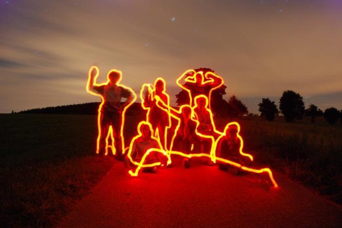
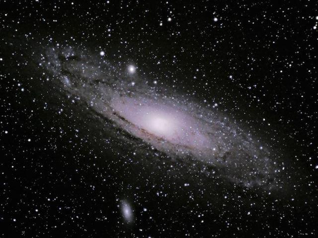
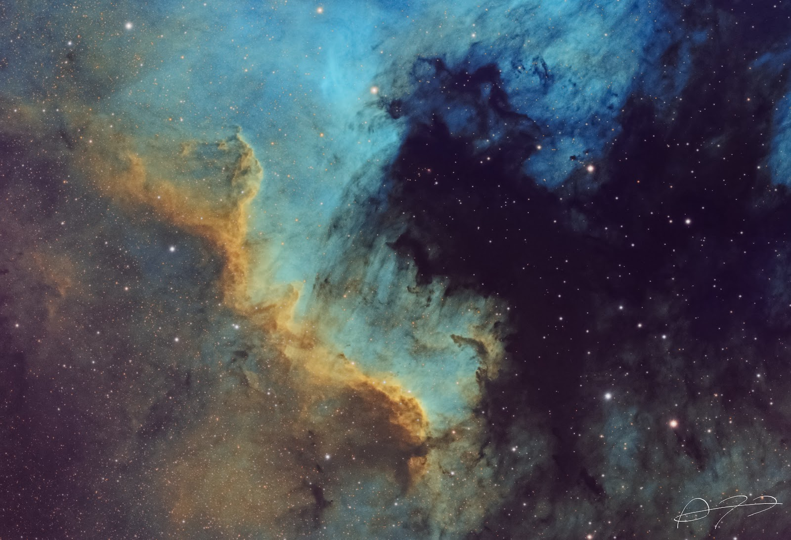
Participation
To participate in the IAYC you must be 16 to 24 years old (16 and 24 included) if you have never attended the in-person camp before. If you are 15 at the start and turn 16 during the camp, then this is fine; similarly, if you are 24 and turn 25 during the camp, then you may also apply. For the IAYC 2023, we will consider applications from previous camp attendees only up to age 25 due to the two years of missed in-person opportunities due to COVID-19.
The participation fee is 990 EUR and the application deadline is 26th of March 2023. Applicants will receive an outcome at the end of April. If accepted, you’ll need to transfer the full fee within seven days. Don’t forget to check your spam — everyone who applied will hear from us, regardless of being accepted or not. Please see our statement on the increase in participation fee this year.
You can withdraw your application at any time before we receive the participation fee. After that, we will refund you minus an administration fee of 50 EUR if you drop out before the 18th of June, and 100 EUR afterwards. If we can’t fill your place, we cannot refund you.

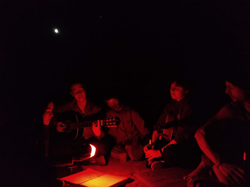
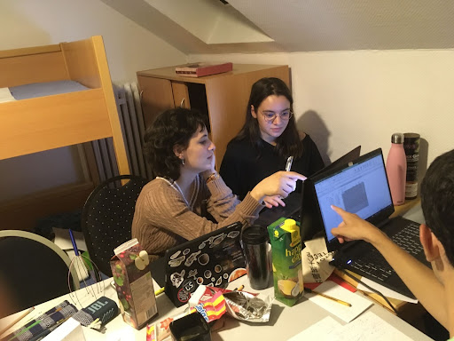
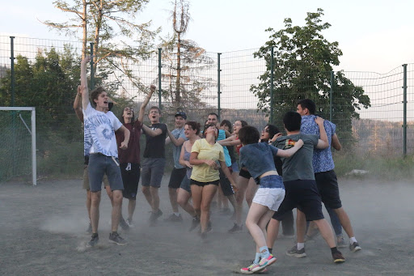
Grants
If financial reasons are keeping you from applying, we encourage you to seek support from our (limited) grant programme. Our grant program can cover up to 940 euros of the participation fee. Note this means you must still cover other expenses such as cost of travel to and from the camp by other means. You can fill out the grant form as part of the regular online application process.
Please note: if you are interested in applying for a grant, the deadline is two weeks earlier, on 12th of March 2023!
This year we are able to offer three different types of grants:
- The usual IAYC grants. This is open to anyone from any background and nationality and available to both new and previous participants.
- The Wilhelm and Else Heraeus (WE-H) Foundation grants. This is open to German citizens and/or residents (for example if you are a foreign student living in Germany, or a German studying abroad), as well as new and previous participants. We may ask for proof that you fulfil the eligibility requirements.
- The Zaklada MIOC Alumni grant. Open to students at the XVth Gymnasium in Zagreb, Croatia. This is a fully funded grant.
If you are interested in applying for one of the above grants, please complete the additional grant section on your online application. As a condition for receiving a grant, you will be required to write a 1-page report outlining your personal impressions, and lessons and skills learned from attending the camp. This will be anonymised (if you wish) and shared with the organisation which funded you.
To improve your chances of receiving funding, you should try to find support from other organisations like the Royal Astronomical Society, European Physical Society or charitable agencies (e.g. Polish Children’s Fund, Swedish Astronomical Youth Association) that support young people doing research. Your school, university or workplace may also fund extra-curricular activities. If you can think of other ways or organisations that could support you, please try to explore them, as unfortunately our grant program is limited and we are unable to fund everyone.
The deadline for sending in a grant application is 12th of March 2023. Please be aware that you may be asked to take part in a short 10 minute virtual interview if you are a grant applicant. If you have questions about the grant programs, please contact info@iayc.org.
Diversity
We are dedicated to making the camp accessible to all, and especially welcome applications from those belonging to minority groups. If you require time away from the schedule for prayers, or if you have any questions about accessibility or dietary concerns, please do not hesitate to get in touch via info@iayc.org . We are committed to making IAYC a safe space, whether for neurodivergent or LGBTQ+ people or other marginalised groups. You can read more on our policy on diversity here.
Unfortunately the camphouse for IAYC 2023 is not wheelchair accessible. We are very sorry about this and hope to find a more accessible camphouse for IAYC 2024.
COVID-19 precautions
We will follow the regulations and guidelines of the German government. Additionally, we may require a proof of vaccination and COVID-19 testing upon arrival and during the camp. We ask that all participants be flexible as guidelines may change as the situation evolves.
Choosing your Working Group
In the following section you can find the abstracts of the eight working groups offered at the IAYC 2023. On the application form you will need to indicate which working groups you want to participate in. The NAP, GEN and Info will also introduce themselves.
CRASH - Capturing micrometeoRites And obServing Hurtling rocks
Tags: Astrogeology, practical, theoretical, observational
Have you ever wished upon a star and wondered how that burning lump of space stuff could possibly fulfil your deepest desires? Well, look no further, fellow dreamer and explorer! For each and every speck of extraterrestrial debris that land upon our tiny blue planet is a treasure-trove full of secrets, bringing the magic of outer space straight to our doorstep!
In this working group we will delve into the practical and theoretical aspects of sampling and analysing (micro)meteorites in ways that are accessible to anyone with a desire to peer into the very small, in order to understand what floats around past the edges of space. We’ll look into how meteors and potential meteorites form, what their origins are and what they can tell us about the contents of our intergalactic neighbourhood. This and more are questions you’ll try to answer during camp.
No matter what your passions are or how experienced you are in the topic, we’ll work together to find a suitable project for you! Would you like to develop the optimal micrometeorite capturing techniques? Learn how to analyse potential meteorites using handy field microscopes? Perhaps you’d rather take the opportunity to study the development of the Persaids meteor shower that will occur during the second and third week of camp? The possibilities are as vast as space itself and you are very welcome to come with your own project ideas! I’m super excited to join you on the crazy adventure these weeks will bring us and, of course, I’ll make sure to fuel your minds and souls with a steady supply of snacks and tea!
See you in Germany!
Linn
Linn

It’s Linn! This Swedish legend is joining the leader team for the first time, after her first camp in 2019. She’s incredibly cool with the best collection of button up shirts. She studied Earth science, so you can often find her staring at rocks. She’s super creative, painting and playing guitar. Linn is always friendly and welcoming, so her working group is sure to have an incredible atmosphere that you’d be sure to have a great time in!
EPIC - Evi's Planet Investigators & Co
Tags: data science, exoplanets, programming, spectroscopy
Have you ever wondered how many planets outside of our solar system, so-called exoplanets, exist? And what these exoplanets are made of? Have you ever been amazed by our ability to detect and characterise exoplanets orbiting stars several hundreds light years away? If the answer is yes to any of these questions, you are going to enjoy my working group!
In EPIC we are going to look at different aspects of everything planets — from detecting exoplanets and observing their atmospheres to studying the theory of planet formation — there are many exciting projects waiting for you! While some of you might be analysing the data which led to the award of the Physics Nobel Prize in 2019, others might look at spectra of exoplanets, finding clouds and/or molecules in their atmospheres using JWST data, or discuss what signatures could give away the presence of extraterrestrial life. Whether you’re an exoplanet expert or need help telling Mercury from Mars, everyone will have an EPIC time!
The only requirement for this EPIC working group is a love for planets and I will provide the rest (along with tea, coffee, biscuits, cookies, etc.)! If you have any questions about the projects or an idea which we could work on, I would love to hear from you!
Clear skies and see you soon in Germany, it’s going to be EPIC!
Evi
Eva-Maria

You’ll be in safe hands with this experienced pro. Evi has been a part of the IAYC for eight years and has been helping run the camp for the last five. Outside of the IAYC this Austrian is an amazing scientist who this year published the first transmission spectrum of an exoplanet’s atmosphere with the NIRCam instrument on JWST (to name but one achievement)! Outside of camp and science she’s also a half-marathon running runner, competitional trampolinist and qualified accountant. Her infectious love for all things astronomy and can-do attitude will make you feel right at home in her working group!
MaPLE - Mathematics for Physics, Life, and Everything!
Tags: mathematics, theoretical, programming, simulation
Why would I ever choose a Maths group at astronomy camp? - I hear you ask. Because there is no such thing as maths-less science! We need geometry to understand Einstein’s relativity; we need Markov theory to infer the structure of early-universe galaxies from modern-day observations; we need group theory to understand the conservation of energy!
As you might already know, Mathematics is an extremely vast field and, unless you happen to be one of those weird humans who choose to study mathematics degrees, I suspect you will have only encountered some very useful but hopelessly tasteless bits of mathematics. Maybe you just want to get a flavour of what a mathematician’s job is actually like. Perhaps you are trying to understand the Higgs mechanism. You might be looking to learn how to design algorithms which give rise to interesting behaviours… Regardless, this is the place for you!!
So join me in MAPLE to learn how to think like a pure mathematician, understand the ideas which ground our understanding of the laws of Physics, listen to A LOT of old music, nerd out about the Riemann hypothesis and have far, far too many cookies!
Andres

Meet the amazing Andrés! This will be his first camp as a leader, but many of you will recognise our friend all the way back to 2015. Andres is a kind and passionate guy with many talents and hobbies both inside and out of astronomy. Feel free to talk to him if you would ever like to be enlightened about classical music and art, or would like to learn how to solve the rubik’s cube at record speeds!
POLO - Pew pew! Orbits and Lunar Observation
Tags: telescopes, astrophotography, planetary astronomy, orbits, sci-fi
In 1609, Galileo pointed the telescope to the night sky for the first time. What he discovered shook our understanding of the whole universe. This was mainly thanks to the moons of Jupiter. Today, Artemis is on its way to make a space station around our Earth’s Moon - another leap towards deep space. We have landed on Titan, Saturn’s greatest satellite, and discovered rivers and lakes made of petrol. Our knowledge about these distant worlds is endlessly expanding.
This working group offers a diverse range of tasks all set around a common theme: the planets’ faithful companions. You could set up a camera and capture the beauty that is our Moon. Just like Galileo, you could point the telescope at the sky and observe the orbits of the Fab Four, with the modern perk that is hot chocolate. You can calculate the orbital manoeuvres and plan a manned mission or speculate about the possibility of extraterrestrial life on these distant worlds.
Whether you’re a courageous astronaut, a patient astrophotographer or just a space enthusiast, pack your cheese knife and join POLO’s journey to the moons and back. I will supply us with cookies and hot chocolate. Fly safe!
Marko

Introducing Marko, the engineering student who’s not only a genius when it comes to maths and science, but also has a heart of gold. When he’s not busy solving complex equations, you can find him giving dynamic and humorous presentations that are sure to leave a lasting impression. And let’s not forget about his good looks and charming personality - he’s the whole package! Just don’t be surprised if you catch him chowing down on a dry baguette as though it were a sausage. It’s just one of his unique anti-French habits. All in all, Marko is a delightful human being and a joy to be around.
RACCOON - ReAlly Crazy CollissiOns in astrONomy
Tags: Astroparticle physics, theoretical, experimental, programming
The universe was created with a bang. And many astrophysical processes are just like that; violently energetic interactions happening at jaw-dropping speeds and magnitudes. Every second the sun alone produces enough energy to power civilization for half a million years. So what do you think happens in a black hole that is 10 billion times denser than the sun?
In RACCOON we will study the origins of high energy particles and photons and their role in astrophysics and cosmology. Here you get a chance to study the thermonuclear processes that occur in the universe. Would you like to learn the theories behind chemically peculiar stars? Or carry out Monte Carlo simulations of high energy collisions of particles? Or even build your own cloud chamber to find cosmic rays? In astroparticle physics anything is possible!
May you be experienced in astroparticle physics or may you be new, RACCOON is guaranteed to have many fun projects in store for you! You need only to bring your favourite mug and a smiling enthusiasm for the cosmos, and I will provide you with all the coffee, tea, biscuits and exciting stories you could ask for about the camp and its close connections to raccoons. See you in Germany!
Ruurd

In the dark depths of the untamed Norwegian wilderness, a beam of light appeared… BAM! Out emerged the chillest guy on the block, Ruurd. This refreshing wind from the north is always up for a lively duel on the chessboard, but fear not! No matter the outcome he’ll always provide a shoulder to lean on and the warmest of hugs afterwards. Ruurd attended his first camp as a participant in 2018 and had his debut as a camp leader in 2022. Now he’s back for his second round! If you feel a calling towards the great northern tundra or just appreciate a (bad) pun once in a while, Ruurd is the guy for you!
SAGA - Stars Are Growing Ahead
Tags: stars, star formation, theory, programming, data analysis
The prefix astro means ‘relating to the stars’. Stars are the building blocks of galaxies, and our universe. Understanding how they form and evolve helps us understand everything from planetary systems to galaxy evolution.
In SAGA we’re going to be investigating how stars are formed, and what affects the mechanisms of star formation. How star formation changes across the galaxy, and over time. We will also be looking at stars across their life cycle; studying the evolution of stars allows us to explore some of the most extreme environments in the universe. Massive stars in particular have extreme effects on their environment during their lifetime, and as they go supernova introduce even more chaos into the system!
We will be analysing astronomical data using Python, with potential to lean into theory, programming or more practical topics. No programming experience is necessary - projects are designed to take you from square one. All you need is curiosity and I’ll be there to guide you through.
If you have any questions or project ideas feel free to get in touch!
Clear skies,
Carys
Carys

Meet Carys, a PhD student at the University of Kent and a well-deserved three times winner of coolest person on the galaxy award!! Under the wing of this wonderful Brit you will learn all things stellar, listen to beautiful singing, and feel thoroughly looked after and supported. This is her 8th camp so she comfortably sits within the Triassic IAYC crowd, and you will want to stick to her if you want to know what’s going on! Better known as “Clarys”, she is one of the kindest, friendliest and cleverest people you’ll ever encounter; do not pass up any opportunity for hanging out with her at Camp!
SPACE - Studying Photons for Awesome Celestial Exploration
Tags: observing, telescopes, data analysis
Observational astronomy is incredible. Think about it, a photon is emitted from a star and begins a break-neck journey at the speed of 300,000 kilometres per second through the vastness of space. Often travelling for hundreds of years before, in around a thousandth of a second, it slams into the Earth’s atmosphere and, if it’s very lucky, enters our telescopes for analysis. Tiny messengers that we can use to learn about this universe we live in.
In SPACE we will use our telescopes to see what these messengers have to say. Using the telescopes available to us at camp we will capture spectra to study what stars are made of (spoiler, it’s mostly hydrogen). We will watch as stars eclipse each other, plotting light curves, as well as make the most of the dark skies with some astrophotography.
If you’ve ever wanted to plan your own observations, carry them out and then analyse the data SPACE is for you! Observational astronomy is daunting for sure, but I’ll be there every step of the way to help (no previous experience needed!) as well as providing hot drinks, snacks, and tales of boundless motivation!
Dan

Dan has been part of the IAYC community for a decade now! Dan can tell you many IAYC stories, many of which somehow involve the moon, but he is also an expert in building astronomical instruments - after all he has a PhD in that field and is now building an instrument for the VLTI! Aside from talking about all things astronomy, he enjoys long runs, playing video games, learning German, everything Star Wars and listening to podcasts. More importantly, he will always have a bad pun at hand and support you every step of the way!
NAP - Non-Astronomical Programme
“This is where the fun begins.” – Anakin Skywalker
In the camp schedule, you might have noticed there are two hours set aside for NAP. This isn’t your chance to catch up on sleep after a late night observing (sorry), but instead it’s your daily dose of fun and games designed to treat your frustration at your code for not compiling, at your telescope for not pointing correctly, or at your result for not obeying the laws of physics. That’s right: every day, we’ll take a break from projects and spend some time being a bit silly.
It’s difficult to describe a typical NAP session. Maybe we’ll run and play games, or try to learn everyone’s name, or compete to build the best device, or read poetry by candlelight, or learn about new cultures, or share our creativity with the camp (bring along your musical instruments!). NAP will be different each day, but it’ll leave you refreshed, smiling, and ready to tackle the biggest questions of the Universe again.
Outside of NAP, I’ll provide you with materials you need for your projects (you’ll be surprised how many problems can be solved with sticky tape), and I’ll be the person to talk to if you’d like to organise a workshop or competition in your free time!
I can tell you’re desperate to know how you can apply to join this incredible working group. Great news – everyone participates in NAP! All you need is comfortable shoes, an iso-mat, a blindfolding device, and a sense of humour.
See you in Germany!
Nikki

Meet: Dr. Nikki Miller! Nikki first appeared at IAYC in 2014 and hasn‘t missed a single camp since. This will be their 4th camp as leader and by now they are a true IAYC-dinosaur ;) Originally from Scotland, Nikki just moved to Warsaw to work even more on their favourite topic: eclipsing binary stars. They also do some really neat photography and are one of the most musically talented people you‘ll meet, so make sure you listen to their ukulele songs. Unless they lose their voice again, you will probably find Nikki walking around the camphouse shouting „Schneller, schneller!“, but don‘t let that stop you from talking to them or you‘ll miss out on a wonderful person!
GEN - General Coordinator
You‘ve read through the website of this incredibly cool space camp and now you ask yourself how on earth it‘s all running so smoothly?
Well, ask no more - that‘s what I‘m here for.
As GEN I‘ll be busy 24/7 (jk, hopefully I do get some sleep) making sure you all have a great time. All the minor and major problems that may arise are mine to deal with. I‘ll talk to the house staff to label the food appropriately, in case you have a food allergy. I‘ll organise a laundry day if you run out of clean clothes and I‘ll collect money for WG snacks and merchandise you buy. I‘ll even fend off raccoons if I have to!
Most of the time I‘ll be taking care of all the small things that happen behind the scenes, but you‘ll see and hear plenty of me in the daily announcements as I bring you the IAYC news of the day or chase down stolen cups. I‘ll put my creative problem-solving skills to the test while trying to make you feel like everything is going according to plan so you can get the most out of camp. All you have to do is have a good time with your fellow IAYCers!
During camp, you can come talk to me about anything, whether it‘s about your project not working, FOMO taking over or the fact that you haven‘t slept in 3 days because you stayed up observing all night – I‘m here for you. (But beware: if the last one applies, I will force you to go to bed!)
Can‘t wait to see you all (again) in the Eichsfelder Hütte!
Wanda

Wanda is one of the kindest and most creative people you’ll meet at the IAYC! Involved with the camp since 2015, this super-cool German is back for a third time as a leader so you’re in capable hands. Though she’ll be busy behind the scenes as GEN, don’t miss the chance to get to know her! You can ask Wanda about her degrees in Biology and Physics, where she has travelled to recently, or for some very tasty vegan recipes. You can often find her walking barefoot in nature, foraging for berries or climbing trees.
Info
Behind an info account there’s always a real person, not an android (yet).
In this case that one is me, Alex! I’ve been around IAYC since 2014 mainly doing astrophotography and martian stuff. This year I’ll be in charge of answering the questions you might have and informing you on how the application process goes. Clear skies!
Alex

Your application for the IAYC 2023
If you want to participate in the IAYC 2023, complete the application form on our website. Please read the instructions carefully. We will also require from you, or your legal guardian if you are not yet 18 (21 in some countries), to sign a consent form to download when finalising your application. Please do not forget to send us the consent form; without it your application is invalid!
Make sure you read the section “Participation” carefully and have a look at our data protection agreement. Please note that you are obliged to have health insurance which is valid in Germany for the duration of the camp. If we decide to accept your application, you will need to send a copy of your insurance certificate to us (e.g. travel insurance certificate, European Health Insurance Card, etc.).
The consent form needs to be signed and sent by regular post to:
IAYC 2023
c/o Gabriel Pavon Barrero
Plaza de Salvador 1, 1°A
Leganes, 28911, Madrid
Spain
You will be informed about your acceptance by the end of April 2023. If accepted, you will need to transfer the applicable participation fee within seven days of receiving the acceptance email.
If you need to apply for a VISA to enter Germany, please contact the German embassy or foreign office in your country as soon as possible to find out what documents you will need. You should also make an appointment for your visa application by May, even if your application has not yet been accepted. Organise this ASAP!
Once you have been accepted, we will provide a letter of invitation if you need one — please find out what details this letter should contain and contact us at least 2 weeks before your appointment at the embassy! Apart from the letter of invitation, obtaining a visa is solely your responsibility.
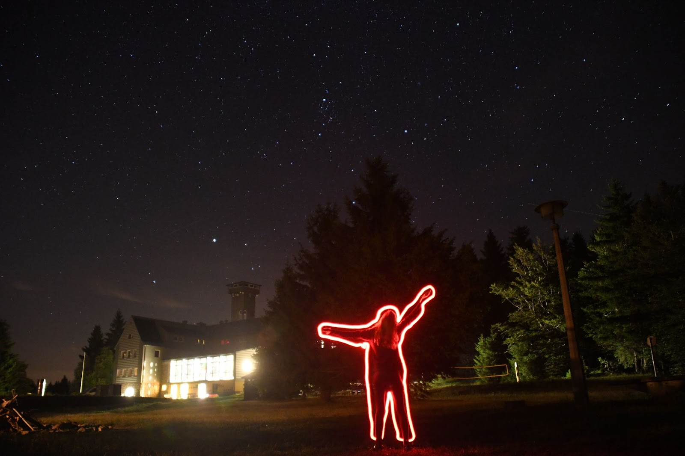
Travel to the IAYC
Please note that we cannot make travel arrangements for individual participants. Travel to and from the camp is the sole responsibility of the participant. It is the sole responsibility of the participant to ensure that their travel plans comply with any COVID-19 related requirements throughout their travel journey.
After acceptance, you will receive a link to the Second Info brochure. It will contain more detailed information on how to travel to the camp. Additionally, you will be able to contact other participants and arrange travel to the camp together.
Any questions?
If you have any questions that are not answered by this page, please do not hesitate to contact info@iayc.org or any one of us. We will try to answer you within a couple of days - usually it’s sooner!
Before emailing info, please make sure you have read the First Info thoroughly. Please also read the FAQ which answers some of the more common questions that you might have.
We look forward to receiving your application and to seeing you in Eichsfelder Hütte. Clear skies from all of us,
Andrés, Carys, Dan, Evi, Linn, Marko, Nikki, Ruurd and Wanda

Supporters of the IAYC
We are very grateful to the following organisations for their sponsorship towards the IAYC 2022. If you are interested in sponsoring us and would like your organisation to be listed here, please contact us at sponsorship@iayc.org.
- Wilhelm und Else Heraeus-Stiftung
- Planetarium Wien
- Julius-Maximilians-Universität Würzburg, Faculty of Physics and Astronomy
- Zaklada MIOC Alumni
- HGS Astronomical Society
- Faulkes Educational Trust
Furthermore, we would like to also thank the supporters of the IAYC 2023:
- Wilhelm und Else Heraeus-Stiftung
- Julius-Maximilians-Universität Würzburg, Faculty of Physics and Astronomy
- Zaklada MIOC Alumni
- Faulkes Educational Trust